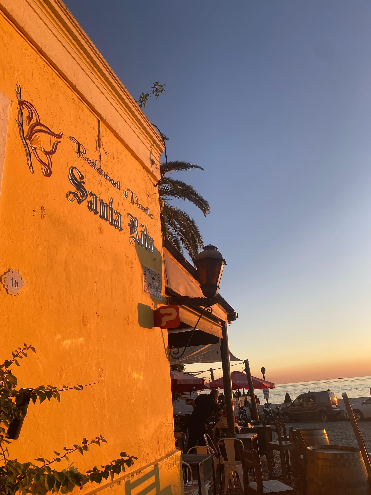
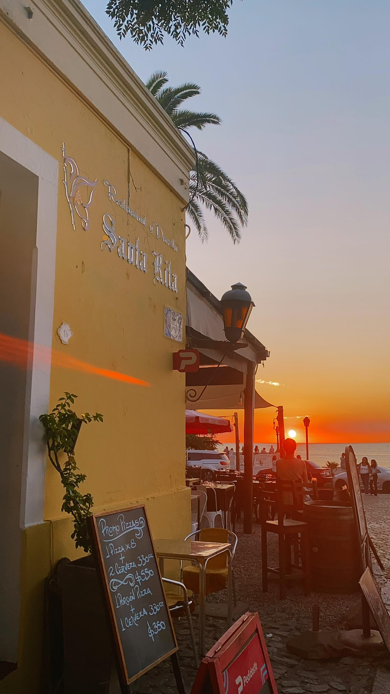
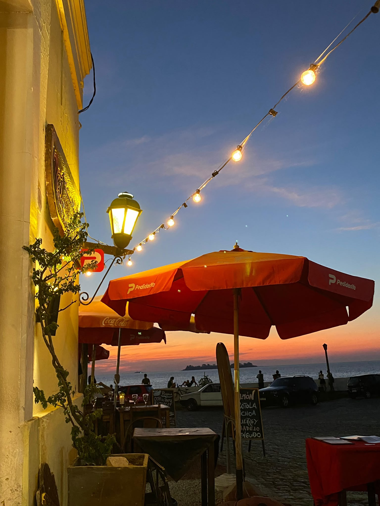
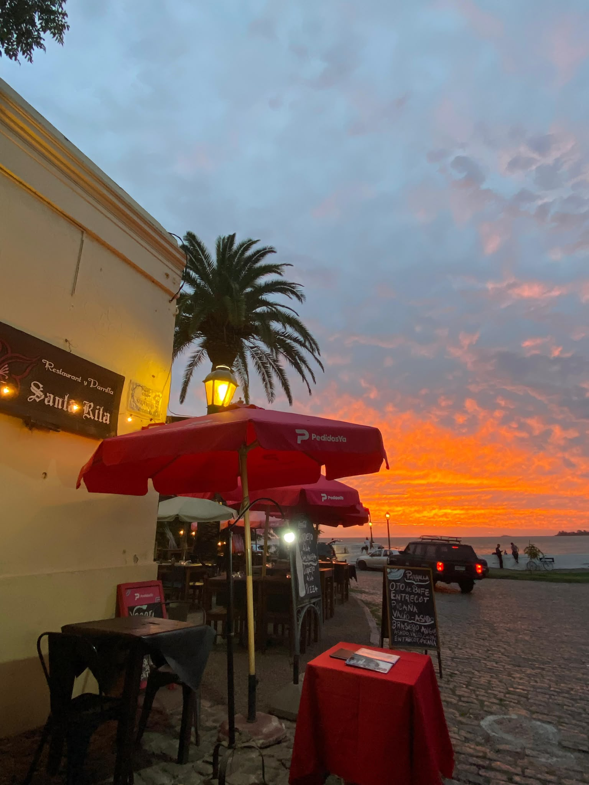

🥩 Nuestra parrilla
- Bife ancho a la parrilla
- Ojo de bife
- Costillas de cordero

Restaurante · Parrilla · Marisquería
Calle Santa Rita, con el frente sobre el Río de la Plata. Parrilla, mariscos y pescados, con uno de los mejores atardeceres de Colonia como fondo.
Un poco de historia
Santa Rita abrió sus puertas el 7 de octubre de 2010, en un lugar que ya elegía por sí solo: el frente da directo al Río de la Plata, y a esa hora en que el cielo se pone naranja, la vista se vuelve parte del menú.
El nombre honra a la santa patrona de los pescadores del barrio. No buscamos ser un restaurante de foto para el turista de paso: la carta es completa, la parrilla es de verdad, y el motivo por el que la gente vuelve es tan simple como sentarse a comer bien mirando el agua.
La vista
El frente de Santa Rita da directo al Río de la Plata. No hay nada en el medio: mesa, mantel, y el agua abriéndose hasta el horizonte a la hora en que cae el sol.
La casa



Cómo llegar
Santa Rita está en calle Santa Rita, Colonia del Sacramento, con el frente directo al Río de la Plata. Si vas a buscar el atardecer, llegá un rato antes de que caiga el sol.
Los esperamos
Abierto todos los días de 12:00 a 16:00 y de 19:30 a 23:30. Reservá con anticipación, sobre todo si querés estar antes de que caiga el sol.